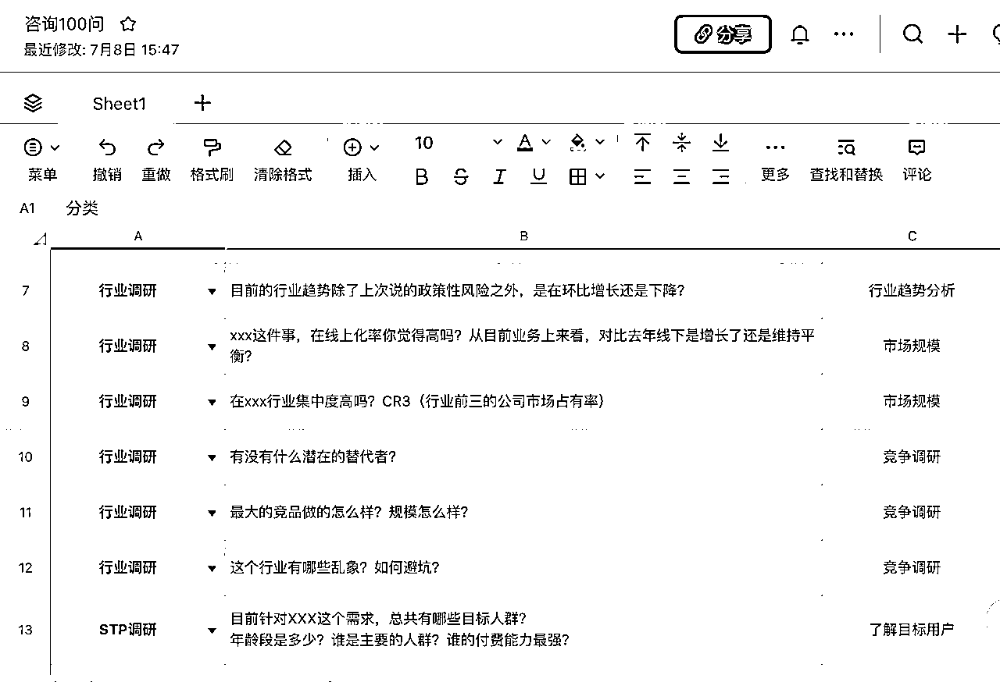
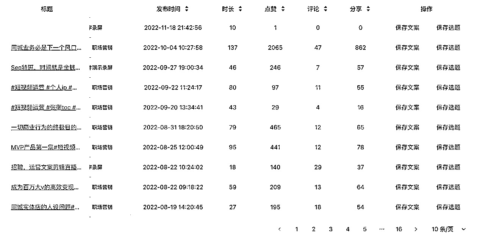
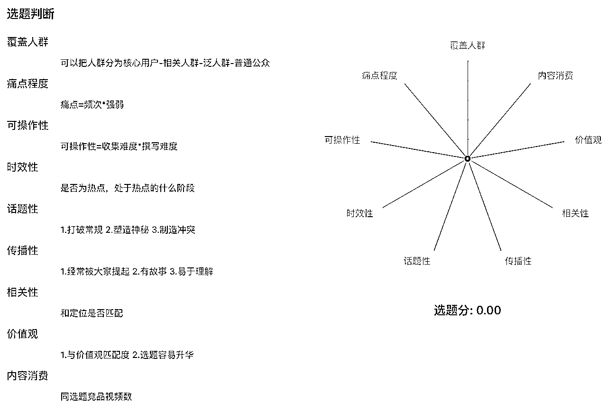
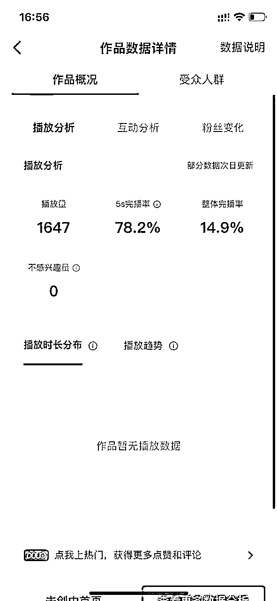

来源：https://heatwave.feishu.cn/docx/MXPcd58gSoEsTlxFhUVcJ5X7npc
大家好，我是俊达，一个短视频赛道创业者。
今年4月份开始，我们团队做了几个垂类知识IP、商业IP，团队也做出了一些成绩：
我把自己关于如何打造短视频IP矩阵的理解，梳理了出来，主要分为5个部分，如果你也是在想做/在做短视频IP方向，希望对你有帮助：
先明确一个认知，我们做抖音IP的最终目的是为了搞流量，为了后端变现。
抖音是开卷考试，前端内容一定是趋同的，而真正决定了项目成败的，是我们的后端变现效率。
比如同样的减肥粉，别人设计好了完善的变现体系，一个客户可以贡献1000块的毛利，而你只能做到500块，那么别人就可以通过投放，通过矩阵，把获客成本拉到900块，这样他获取流量的效率和规模一定是碾压你的。
抖音的流量成本一定是越来越高的，当你ROI算不过来的时候，你就不敢放预算，而现在的抖音，没有付费投放，很难起量和放大。
什么样的变现产品适合做IP呢？
我认为有两种：
一种是低客单价（0-50）的泛兴趣产品（比如书单号，低价知识付费课程），
还有一种是高客单价（1000+）的精准痛点产品（比如高考志愿填报）。
不同客单价背后是不同的成交路径。
对于超低客单价兴趣产品，可以通过短视频带货直接成交，比较适合小团队，个人上手，需要具备一定的选品能力和流量运营能力。
因为客单价低，所以一定要选择大流量，高转化率产品，比如书单号，比如揭秘人性的厚黑学，产品针对的用户人群规模在1亿+，流量端成本相对低，不需要太多数据积累就能跑出精准的账号模型。
我们团队的运营自己做外星人书单号，好的时候一个月也能变现几万块。
而对于高客单价产品，通常有两种成交路径，一种是直播间直接转化，一种是引流私域成交。
因为流程相对复杂，适合本身有直播经验，或者有私域销售经验的团队做。
对于直播间直接成交的高客单产品，需要用户对于IP有非常强的信任，比如李一舟，还有很多小众博主直播间可能就是十几几十个人，但是GPM很高，粉丝客单价高，抖音也会源源不断推流。
第二种，引流私域成交的路径，需要低转高打法，前端卖低价产品，后端再往几千块上万块导流。比如海参系。这种路径还是比较复杂，吃团队能力，要解决的问题太多了：
比如，短视频引流的SOP，直播引流的SOP，私域销售的SOP，低价产品体系，高价产品体系等等。
聊聊我们，
我们当时通过朋友了解到，抖音上有1个几十万粉的高考志愿老师，年变现上千万，看起来是一个相对比较蓝海的赛道。
我们又在生财社群里搜索了有相关的帖子，综合考察下来，确实是个投产比比较高的项目：
一方面，符合我对抖音IP变现的逻辑（高客单的 咨询/培训/招商 产品）。
还有一方面，这个项目，季节性极度的强。
我们当时是3月底，马上到6月高考季，流量来了。
所以就搜、找朋友问，哪家机构是我们当地最大的，也就是行业冠军，
然后企查查、boss直聘查老板电话，直接一个cold call打过去，也很顺利，约见面两次后，谈成联营合作，每月的服务费+项目分成，很快的这个事就跑起来了。
行业冠军的好处就是有预算、有背书、变现体系完整，这种是更适合抖音放大的好企业。
先问大家个问题：短视频IP想要爆火，什么是重要的?
我们团队的理解是：
观众缘 > 表现力 > 文案（选题 > 开头 > 结构 > 结尾 ）> 场景 >剪辑
观众缘，不只是观众看的舒服，还得匹配。你让个小姑娘讲中医变现一定不好。
表现力，同样的文案，不同的人念出来，流量天差地别。
如果想明白这个，其实内容团队的核心之一--谁来出镜，这个事大家就要想明白了。
大部分老板的认知还是说要做创始人IP，但从我们经验，创始人IP真的是个坑。
主要有两个原因：
一方面，大部分老板的专业程度，不足以弥补在表现力上的差距；另一方面，老板本身时间比较值钱，没有办法全力all in在抖音流量端。
我们在这上面就踩坑了，当时和高考这个项目合作，就是让创始人出来做的，后面创始人时间有限，直播场次跟不上，浪费了很多流量（至少几十万的钱钱）。
现在让我选，我一定找个演员去做这个项目，在咸鱼、Boss找，稳定200一天，效率高、表现力好。
我们找个运营去跟就好了，核算下来1条视频拍摄成本50块。
（最近我们已经看到很多团队选择专业主持人出镜，从商业效率角度，比创始人自己出镜或者签约专家老师效率更高。）
那想打造短视频IP，除了出镜人本身，团队还需要什么样的人呢？
如果是找演员做素人IP，那么团队搭配运营、拍摄剪辑就可以了。运营的工作主要考核私域引流量，而剪辑主要考核剪辑视频数。
运营的工作包括了：
剪辑就做四件事：
如果你是面向创始人/专家做IP孵化，那工作岗位还得加个IP手（聊天手），工作内容核心是了解IP、和IP沟通、不断挖掘IP可以表达内容，核心考核指标和运营对齐。
团队的架构决定了如何配合，团队的能力决定了我们做账号的上限。
我在二线城市做抖音，在市面上招不太到完全对口的人。同时我也问了下身边做MCN朋友，大家普遍反馈是好的内容运营非常难招。这确实是个非常头疼的问题。
但是剪辑，这个岗位，非常好招，boss直聘开个岗位私信会爆掉。
那么只招剪辑，筛选优秀人才往运营方向培养，是不是可行呢？
我测试，完全行得通。不止是招人容易了，用人成本也下来了。
所以我对招短视频团队的解决方案是：
人才成长路线：剪辑 -> 运营 -> 项目经理
这样搭建出的团队，因为是老人或者老板自己下场跑第一圈流程的，能力不会太差，同时也不会断层。
人不断层很重要，我认为一个真正能盈利的短视频团队，最重要的不是什么内容能力，而是不下牌桌的能力。
人不断层，不会因为一个IP，一个运营退出不干，而让业务停下来了。
而如果遇到很好的内容运营找工作（P.s:他们一般都自己干了），抓紧拉成合伙人。
聊完短视频IP团队，接下来我们说说流程的事。
这点，我很自信的说，我们是非常专业的。
因为我们不只是自己摸索、还找了很多先进团队交流，甚至还自己开发了套内容系统。
不为别的，我相信用流程能规模复制。
内容营销团队，最大的浪费根本不是人才、时间，而是经验的浪费。
没有好的流程，内容营销团队积累、探索的内容方法没办法积累下来，这个业务就根本没办法放大。
那么我们打造短视频IP的具体流程是什么样呢？
首先一定是定位和规划。这个可能需要花2-3天，但是非常值得。
定位要做三件事，
第一件事，竞品调研，调研什么？
第二件事，找定位缺口。
先想商业定位，然后再想内容定位。
梳理一下竞品的变现产品，看他们的内容打法，然后找到变现产品的缺口。
比如说我现在做法律的，如果没有人在抖音卖过关于公司法，劳动合同法的品，或者现在卖的不专业。我能超过他，那么就可以做。

我们自己梳理了100个问题，如果认为找到定位缺口了，那就会把这100个问题梳理一遍，如果全部能回答上来，那基本就问题不大了。
然后我们需要把用户的需求凝练成一句话，比如说我们把高考志愿的需求凝练下，那就是：铁饭碗、好就业、上名校、考高分
先把用户需求和痛点摸清楚了，我们再思考内容的事。
第三件事，做定位细节。
这时候围绕商业定位，我们会做细节的梳理。
比如要IP还是要演员，简介、头像、选题的规划、内容的基本模板、抖+的预算等等。
这些工作往往是运营配合项目经理/老板干的。
确定了定位后，才开始到具体的执行。
找对标账号可以通过抖音自己出的热点宝的热门账号功能，https://douhot.douyin.com/observe?active_tab=monitor_hot_account
一键就能找到你这个领域下面最近涨粉比较猛的账号，一下子把找账号问题解决了。
这个目前市面上没有好的解决方案，我们自己做了个系统（也给几个朋友的MCN在用），算好用。
可以实现一键整理对标账号的视频。看到不错的就保存下来转文字，然后归纳汇总。

评分主要从以下几个维度：

有了选题之后，我们再去写文案，其实很简单，只需要做好：
绝大部分人做短视频没流量，问题就是对标都不对。
大部分都是找个三四个几千赞一万赞的视频就开始框框抄，然后发现结果就是不行。
就算是小众领域，也可以跨领域找对标。
我们为了优化这个流程，让我们的初阶运营可以快速上手，做了关键词拓展、批量搜索转文字的工具，最终一篇文案，差不多有20个非常精准的高赞（2-50w赞）的对标视频可以直接借鉴，所花费的时间可能也就20分钟。
为什么这么追求效率？
因为我有一个非常深的体悟，就是绝大多数内容质量的问题，都可以用调研更多竞品来解决。
找到了对标文案，再就是文案的撰写了。
写文案最重要的就是开头，重要性占比70%以上。
我们的解决方案就是，开头一定要复制爆款开头的句式结构，我要求我们运营写的每一个开头，都要找到对应的爆款对标（点赞10w+）。比如我们现在做的开头，基本新号5秒完播率能到50%以上。

我们自己测一篇文案最好的结构就是：
泛流量开头+漏斗型观点+引导结尾，也可以理解为钩子开头+内容框架+钩子结尾
这个没什么聊的，按着来，没有任何技术难度。
如果你是进棚坐拍，可以看看我们团队小伙伴整理的这个：
剧情号有场景拍的，我不太懂，如果有经验的小伙伴也欢迎交流交流，我们最近也在探索这个，剧情化知识。
最后就是复盘流程了，比较可惜的是我发现很多团队对复盘其实敏感度还是不够。
我说几个核心数据指标：
看到数据ok后，再去投放。
我们目前起号大概5000预算，投到基础粉丝模型搭建完毕就可以（一般能上万粉），周期一个月左右。
这里给想做高客单，尤其是高客单咨询、招商的朋友们一点建议，不要做什么7天、14天起号，粉丝模型会搭建的太泛了的，慢慢投，也是找新号的内容形式的过程。
下面我聊聊我看好的短视频IP的方向，如果你是以下赛道的专家/老板，欢迎来撩。
S级赛道：升学规划（行善自有天知）、小众职业培训赛道（比如挖掘机）、小众招商
A级赛道：公考教资培训、留学培训（留学韩老师）、中医赛道（资质有了很不错）
B级赛道：医美赛道（限流问题），财经投资（需要解决供应链和限流问题），小吃培训（西安品诺餐饮小吃培训，走下坡了）
下面分享20条我自己做抖音IP的实战心得，希望对你有启发：
以上的分享都是我做这个业务几个月来的一些心得，
恰逢封在家，脑袋放空，梳理了一下，欢迎拍砖。
目前我们内部在孵化几个小垂类的 招商/知识付费 的账号，还在拓展，
如果你也在做抖音，或者喜欢新鲜事物，欢迎来聊。